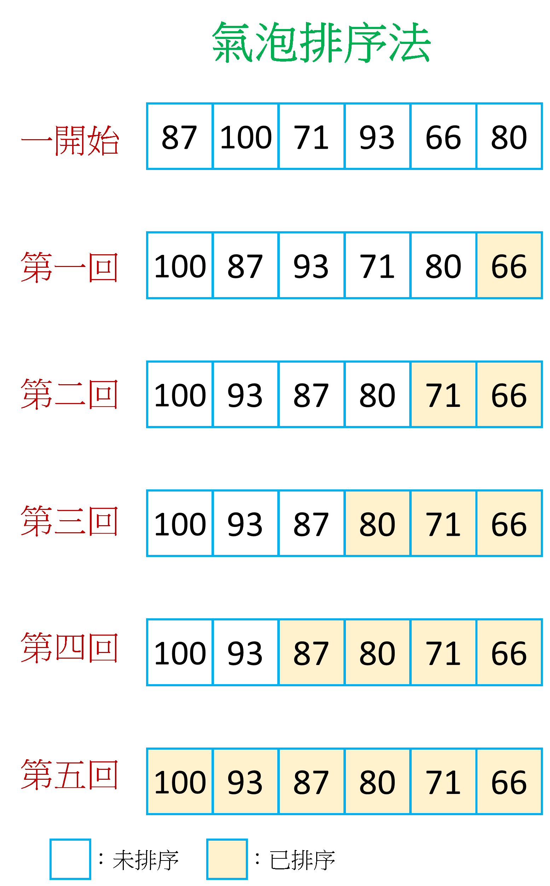

氣泡排序法
〈各式各樣的排序〉第一回
又到了學期即將結束的6月，MY老師面對著總共有87份的材料科學與工程導論考卷，非常頭疼。就在上周同學們考完材導期末考，最終學期總成績也都出爐，這時老師想要知道:
- 全班的前三名分別是誰
- 有多少人的分數低於60分，之後要安排補考
假如完全對同學們的成績不預先作處理，那麼要達成上面的目標可能得花個3天，非常的耗時費力。這時MY老師突然想到：「不如就用之前學過的排序演算法」吧！先把同學的成績與名字做成「成績 : 名字」的鍵值對，然後按照成績從高排到低，不用一個下午就能夠很輕易的完成任務了！排序演算法的種類繁多，各有各的優缺點。這邊想要來整理幾個比較常聽到的排序方式：氣泡排序法、選擇排序法、插入排序法、快速排序法、合併排序法、堆積排序、計數排序以及桶排序法。
氣泡排序法
直接用圖示應該比較容易了解，讓我們先來看看圖：

我們有一個由不同分數構成的序列，這個序列還沒有經過排序，以
[87,100,71,93,66,80]
來表示。我們想要用氣泡排序法將分數由大排到小。首先是第一回合，用87(第0個索引位置)跟下一個數字100(第1個索引位置)做比較，發現87<100，於是把它們兩個的位置交換，得到序列
[100,87,71,93,66,80]
接著把焦點移到下一位(第1個索引位置)，也就是目前分數為87的位置，去跟它的下一位71(第2個索引位置)比較。由於87>71，不需要交換，於是我們再次把焦點往後移(到第2個索引位置)，去用71跟93比較。發現到71<93，因此將兩個進行交換，此時的序列為
[100,87,93,71,66,80]
然後焦點換到目前71的位置(第3個索引位置)，去跟66(第4個索引位置)比較，發現不需要交換，最後把焦點移到66(第4個索引位置)去跟80(第5個索引值)比較，兩者交換之後完成第一回合的氣泡排序，此時的序列為
[100,87,93,71,80,66]
可以發現整個序列中的最小值(66)已經被排到整個序列的最末端，就像是氣泡一樣的跑出來。
接著進到第二回合。也是一樣從第0個索引值100開始，跟第1個索引值87比較，發現不需要交換之後把焦點移到第1個索引值87，去跟第2個索引值93比較。因為87<93，所以兩個交換位置，此時序列為
[100,93,87,71,80,66]
接著焦點來到第2個索引值87，跟下一位71比。因為不用交換所以焦點再次移動，來到第3個索引值71。用71跟第4個索引值80相比，把它們互相交換，此時序列為
[100,93,87,80,71,66]
由於第5個索引值66是已經排序過後的元素，因此這一回合的排序就到這邊結束，可以發現整個序列當中第2小的分數71被排到序列的倒數第二個位置。接著來到第三回合的排序。重複前面提到的過程去做排序，我們很驚喜的發現整個過程都不需要交換，整個序列都已經按照要求排序完成！這個時候我們有兩個選擇:
- 繼續進到第四回合的排序
- 既然都不需要交換，表示整個序列已經排序完成，可以結束囉～
由於MY老師是氣泡排序法的初學者，因此採用第一個選擇繼續進行，所以圖示的部分就畫出老老實實做完每一回合氣泡排序的結果。如果採用第二個選擇的話，就能夠提早結束排序過程，減少程式執行所需的步驟(優化的氣泡排序法)，早一點完成工作然後下班！
小結
氣泡排序法的核心思想就是「判斷當前的值與下一位的值有沒有需要交換」。在每一回合的時候從第0個索引值開始，一直到最後一個尚未排序過的元素都經過比較後，進到下一回合。若有n個元素需要排序，那最多需要n-1個回合，第i回合需要比較n-i次，因此總共需要(n-1)+(n-2)+..+2+1=n*(n-1)/2次，時間複雜度為O(n2)。在n很小的時候，氣泡排序法實作簡單，容易理解，是個好選擇；但是當n很大時，所需要的步驟數太多，很可能讓電腦出現像是當機的狀態，這個時候就不建議使用氣泡排序法了ಥ_ಥ

國立交通大學材料系奈米科技碩士班畢業(現在應該稱國立陽明交通大學ʕ •ᴥ•ʔ)。雖然非資工相關科系畢業，但本著對資工領域的興趣而開始自學相關知識，目前則專攻網頁相關知識，如HTML5、CSS3、JavaScript、Node.js。以跨領域學習者的角度來介紹資工領域相關的知識，除了加深自己對相關知識的理解，也期望同是跨領域學習的朋友們因為瀏覽我的文章而有更多不一樣的觀點可以參考。